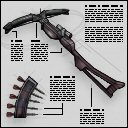

The Crossbow fires a powerful dart that explodes if it doesn't hit a living target. The secondary fire zooms in. A skilled sniper in a good position can defend his base extremely well using the capabilities of this weapon. It takes very heavy armor to protect against a well-placed crossbow dart, and even then chances are slim. |